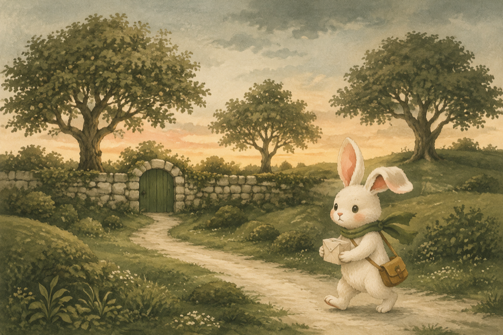

Mossprint
Small errands. Sleeping gardens.
A quiet route-planning puzzle for iPhone and iPad. Collect the parcel, mind your footsteps, and bring the post home without waking the neighbors.
600 campaign routes across twelve chapters. Moss softens your steps; leaves and twigs make a crunch. Later gardens ask you to time your footsteps with the breeze. Think for as long as you like.
Unlimited undo and hints. No ads, lives, subscriptions, accounts, or connection required.
Help with your delivery →